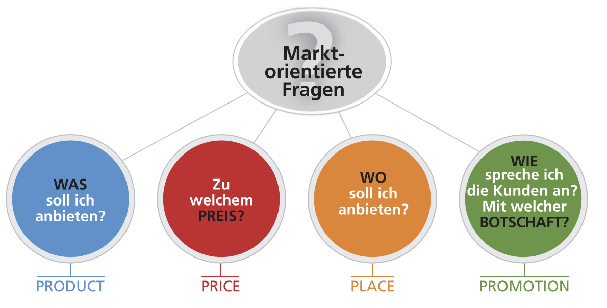
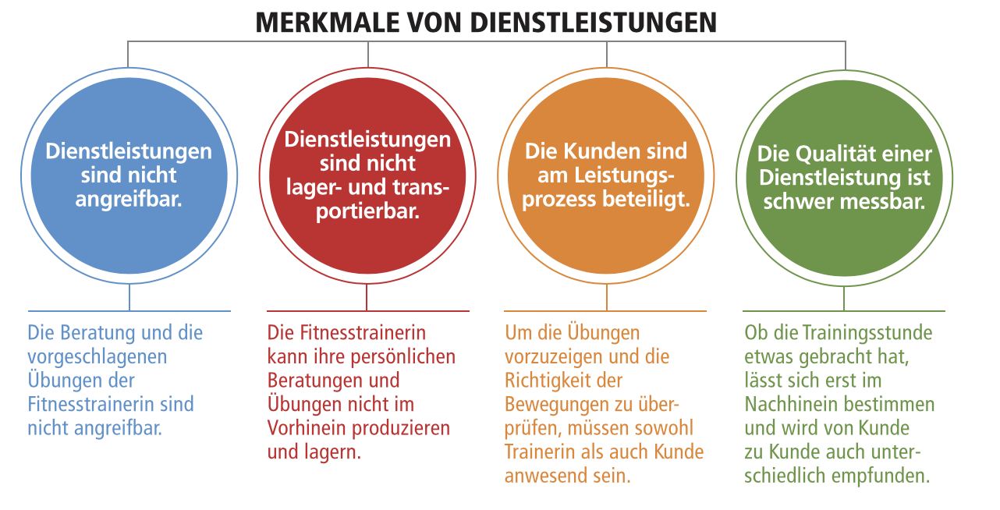
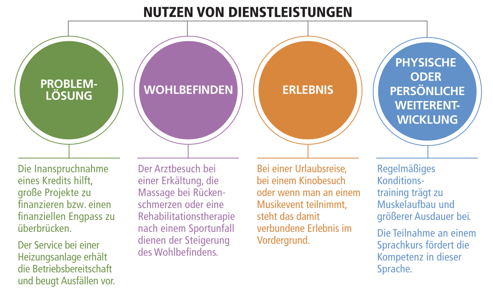
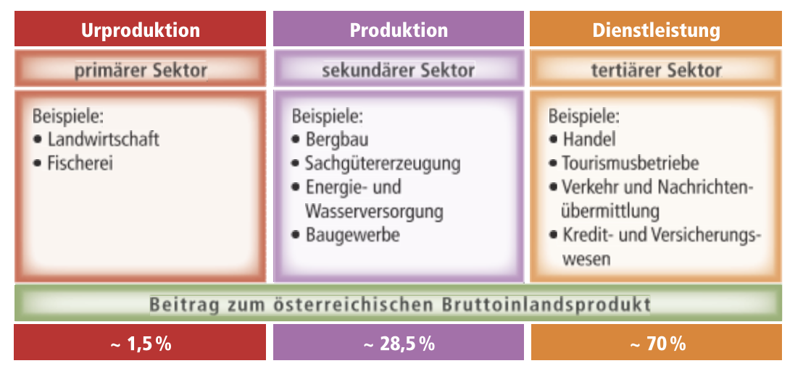
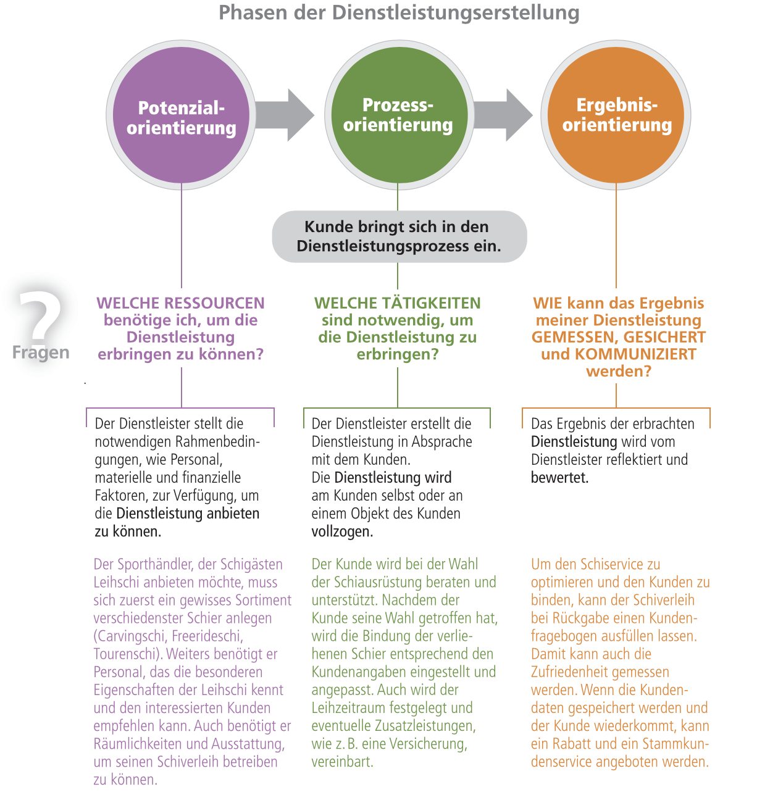
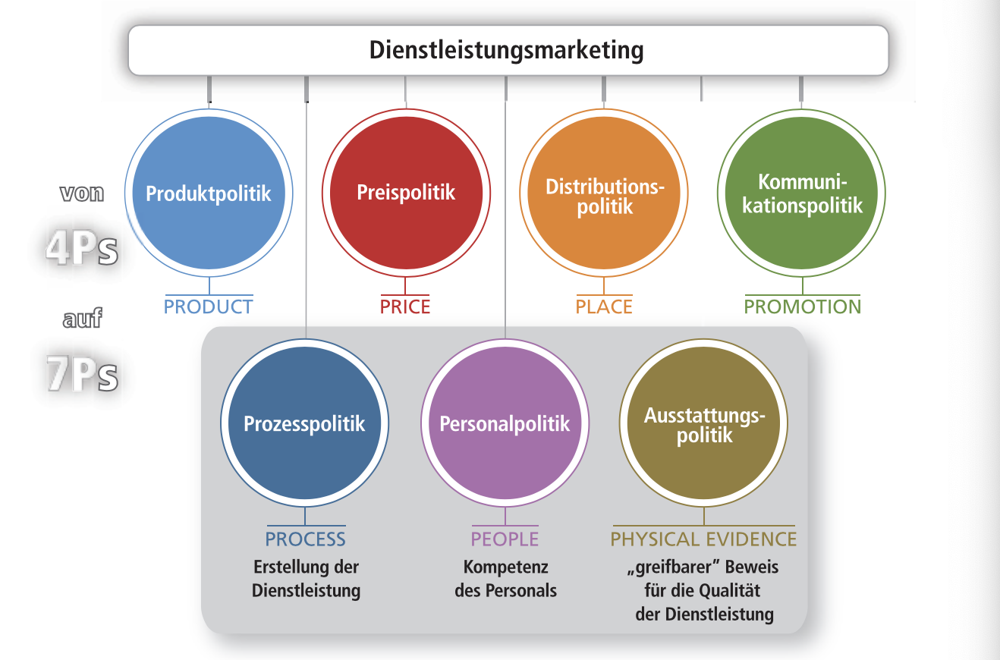

Jede Stelle ist mehreren Instanzen unterstellt → flexibler, für Bereiche die sich schnell ändern
Produkt A kann von allen Abteilungen Weisungen erhalten
Formale und informale Organisation
Bedeutung „formal”
Formal bedeutet „auf dem Papier”.
Informale Organisation (Definition/Elemente)
Informaler Führer: Führer, dessen Meinung von den Mitarbeitern anerkannt wird.
Informale Normen: Regeln, die nicht auf dem Papier existieren z.B.: Schäden werden selbst behoben
Informale Kommunikationsstrukturen: z.B.: Mitarbeiter kennen sich privat und reden miteinander, treffen sich im Buffet oder machen gemeinsam Sport. Vorteil: schnellere Kommunikation
Informale Gruppen: persönliche Zusammenschüsse (z.B.: durch gemeinsamen Sport, …)
Ablauforganisation
Durchführung von Ablaufplanung (Was wird verwendet?)
Nur wissen, dass der Ablauf mit einem Balkendiagramm geplant wird.
Firma, Firmenbuch, Rechtsformen
Firmenbuch
Eigenschaften eines Firmenbuches?
Das Firmenbuch ist ein öffentliches Verzeichnis aller eingetragener Unternehmen → erhöht das Vertrauen in das Unternehmen; Es wird vom jeweiligen Bezirksgericht verwaltet.
Wer muss eingetragen sein? (Firmenbuch)
Alle großen Unternehmen müssen jedoch eingetragen werden.
Unternehmen die von mehreren Unternehmern gemeinsam betrieben werden (Personen/Kapitalgesellschaften)
Einzelunternehmen die in zwei aufeinanderfolgenden Geschäftsjahren mehr als 700.000€ oder in einem Jahr mehr als 1. Mio. € Umsatz aufweisen.
Freiberufler müssen nicht eingetragen sein.
Auf muss man bei der Firmenbezeichnung beachten?
Wahl der Firmenbezeichnung: Grundsätzlich freie Wahl der Bezeichnung, muss aber Hinweis auf Rechtsform enthalten.
Die Firmenbezeichnung: muss Unterscheidungskraft besitzen; darf nicht irreführend sein; Einzelunternehmen: nur Namen des Einzelunternehmers/Gesellschafter (muss aber nicht)
Beispiel: Firmenbezeichnung fremder Name
Rechtsformen
Rechtsformen der Unternehmen?Grafik: Rechsformen der Unternehmen (Seite 6, II)
Regelungen: UGB und ABGB
Einzelunternehmen: Eigentum einer einzigen Person. → Er entscheidet und haftet allein mit seinem Unternehmens- und Privatvermögen.
Einzelunternehmen und Personengesellschaften bei über 1. Mio Euro Jahresumsatz (oder 700.000€ bei 2 aufeinanderfolgenden Jahren)
Freiberufler und Landwirte als Personengesellschaft/Einzelunternehmen müssen trotz Umsatzüberschreitung keine DB führen. → „Einnahmen-Ausgaben-Rechnung” bzw. Gewinnermittlung pauschaliert
Personengesellschaften
Allgemeine Eigenschaften von PersonengesellschaftenGrafik: Personengesellschaften (Seite 14, II)
Kapital bei PersonengesellschaftenGrafik: Kapital (Seite 15, II)
Risiko bei Personengesellschaften
Offene Gesellschaft: Gesellschafter haften unbeschränkt (mit Privatvermögen) und solidarisch (jeder beliebige könnte für den Gesamtbetrag haftbar gemacht werden)
Kommanditgesellschaft
Komplementäre: unbeschränkt und solidarisch
Kommanditisten: beschränkt (nur mit der Einlage)
Stille Gesellschaft: beschränkt (nur mit der Einlage)
Mitarbeit und Kontrolle bei Personengesellschaften
Offene Gesellschaft:
zur Mitarbeit berechtigt und verpflichtet
haben Kontrollrechte
Kommanditgesellschaft
Komplementäre: zur Mitarbeit berechtigt und verpflichtet
Kommanditisten: kein Mitarbeits- und beschränktes Kontrollrecht
Stille Gesellschaft: kein Mitarbeitsrecht; Kontrollrechte: Abschrift der Bilanz, Jahresabschlüsse
Namen bei Personengesellschaften
OG und KG sind haben eine Eintragungspflicht im Firmenbuch
Vorteile: Beteiligung ohne Pflicht zur Mitarbeit, Geheimhaltung der Beteiligung
Nachteile: Keine Beteiligung am Wertzuwachs (Bei Ausscheidung: nur Anspruch auf die Einlage), Beschränkte Kontrollmöglichkeiten
Kapitalgesellschaften
Eigenschaften/Arten von KapitalgesellschaftenGrafik: Kapitalgesellschaften (Seite 23, II)Grafik: Arten von Kapitalgesellschaften (Seite 24, II)
Eigenschaften einer GmbH
Hälfte des Stammkapitals kann in Vermögensgegenstände sein.
Stammkapital: € 35.000
Mindesthöhe des Geschäftsanteils: € 70
Gesellschafter bringen sogenannte Stammeinlagen auf.
Recht auf Gewinnanteil und Stimmrecht auf der Generalversammlung.
Eigenschaften einer Aktiengesellschaften (AG)
Grundkapital (Summe der Nennwerte aller Aktien): € 70.000
Mindestnennwert einer Aktie: € 1
Aktionäre kaufen Aktien und sind Eigentümer.
Recht auf Gewinnanteil (Dividende) und Stimmrecht auf der Hauptversammlung.
Risiko bei Kapitalgesellschaften
GmbH: Haftung auf die Stammeinlage beschränkt.
AG: Haftung auf die Einlage beschränkt.
Beide haften als juristische Person mit dem gesamten Betriebsvermögen.
Mitarbeit und Kontrolle bei KapitalgesellschaftenGrafik: Mitarbeit und Kontrolle (Seite 25, II)
Vorteile/Nachteile bei KapitalgesellschaftenGrafik: Vorteile/Nachteile (Seite 26, II)
Sonderformen
Sonderform der Europäische Aktiengesellschaft (SE)
z.B.: STRABAG SE
„Societas Europea” → überall in der EU tätig ohne Gründung einer Tochtergesellschaft (durch EU-Recht geregelt)
Mindestkapital: € 120.000
Leitung: Verwaltungsrat („Board”)
Sonstige Gesellschaftsformen
Erwerbs- und Wirtschaftsgenossenschaft
Eigenschaften/Definition einer Erwerbs- und Wirtschaftsgenossenschaft
Vereine von nicht geschlossener Mitgliederzahl zur Förderung des Erwerbs oder der Wirtschaft ihrer Mitglieder.
Haben eine eigene Rechtspersönlichkeit und sind eine juristische Person.
Grafik: Genossenschaften (Seite 32, II)
Tätigkeit ist nicht in erster Linie auf Gewinn ausgerichtet, sondern auf die Förderung ihrer Mitglieder.
Doppelstellung der Mitglieder: sind „Unternehmer” und ihre eigenen „Kunden”
Höhe und Anzahl der Geschäftsanteile, die vom einzelnen Mitglied zu zeichnen sind, werden durch die Satzung bestimmt.
Besonderheiten von Erwerbs- und Wirtschaftsgenossenschaften
Mitglieder werden unterstützt.
Sie haften mit der eigenen Einlage.
Arten von Erwerbs- und Wirtschaftsgenossenschaften
Einkaufsgenossenschaft (Bezugs- und Rohstoffgenossenschaft)
Gemeinsamer Einkauf von großen Mengen und Aufteilung auf die Mitglieder → Kleingewerbetreibende können billiger Einkaufen und dem Wettbewerb mit Großbetrieben besser begegnen.
Verkaufsgenossenschaft (Absatzgenossenschaft)
Erzeugnisse der Mitglieder werden durch eine gemeinsame Verkaufsstelle verkauft.
Verringert die Kosten → keine Lagerkosten und kein eigener Vertrieb nötig
Höhere Auswahl für Kunden
Kleingewerbe hat eine größere Möglichkeit auf große Aufträge
Verwertungsgenossenschaft
Verarbeiten und Verwertung der Produkte der Mitglieder
Molkereigenossenschaft
Winzergenossenschaft
Obst- und Gemüsegenossenschaft
Nutzungsgenossenschaft
Gemeinsame Nutzung von Anlagen und Einrichtungen (z.B.: große landwirtschaftliche Maschinen → Mähdrescher und Traktoren)
Kreditgenossenschaft
Gewährt Kredite an die Mitglieder, die keinen Kredit bei der Bank bekommen, weil die Beträge zu klein waren oder die Sicherheiten nicht ausreichen.
Raiffeisenbanken: früher Kreditgewährung an die bäuerliche Kreise
Volksbanken (gewerbliche Kreditgenossenschaften): hauptsächlich Kleingewerbetreibende
Bau- und Siedlungsgenossenschaft
Den Mitgliedern den Erwerb von Grund und Boden erleichtern oder Einrichtung von Siedlungshäusern und Genossenschaftswohnungen.
Organisation einer Erwerbs- und Wirtschaftsgenossenschaft
Generalversammlung: Versammlung der Mitglieder → wählen Aufsichtsrat und Vorstand (jedes Mitglied hat eine Stimme, außer die Satzung sieht etwas anderes vor.)
Aufsichtsrat: Kontrollorgan, dass den Vorstand kontrolliert. (ab 40 Arbeitnehmern vorgeschrieben)
Vorstand: Geschäftsführung (muss Mitglied der Genossenschaft sein)
Gesellschaft bürgerlichen Rechts (GesbR)
Wie werden Gesellschaften bürgerlichen Rechts gegründet?
als Arbeitsgemeinschaft → z.B.: bei größeren Bauprojekten
als Vorgesellschaft → bevor die AG ins Firmenbuch eingetragen wird (Satzung noch nicht beschlossen)
Eigenschaften einer Gesellschaft bürgerlichen Rechts
Leistungen bzw. Sachen (Geld, Güter, Arbeit) werden zum gemeinsamen Nutzen eingesetzt.
kein Firmenbucheintrag → Keine Firma des UGB
Gesellschaftsvertrag → Geschäftsführung, Dauer der Gesellschaft, Gewinnverteilung
Rechte der Gesellschafter: Büchereinsicht, Kündigungsrecht (bei unbestimmter Zeit)
Haftung: unbeschränkt und solidarisch
Gewinngrenze: 700.000 bzw. 1. Mio. → Umformung in Offene Gesellschaft/Kommanditgesellschaft
Privatstiftung
Eigenschaften einer Privatstiftung
Ein oder mehrere Stifter übertragen Teile ihres Vermögens an eine juristische Person
kein Eigentümer → vom Stiftungsvorstand verwaltet und von Stiftungsprüfern geprüft
Sitz im Inland
Zweck im Stiftungsvertrag → gemeinnützig bzw. zum Versorgen des Stifters
Kommanditgesellschaften (GmbH & Co KG)
Eigenschaften/Merkmale einer Kommanditgesellschaft
Beibehalten der Vorteile einer Personengesellschaft + unbeschränkte Haftung ausgeschaltet.
Management
Perspektiven des ManagementGrafik: Managementperspektiven (Seite 3, III)
Eigenschaften von Managementprozessen
Bestimmen von Zielen (für die Zukunft angestrebte Zustände)
Bestimmen von Maßnahmen und Wege zu den Zielen
Soll-Ist-Vergleich: Überprüfung, zu welchem Zeitpunkt und in welchem Ausmaß die Ziele erreicht wurden
Grafik: PDCA-Zyklus (Seite 114, III)
Allgemeine Aufgaben des Management
Planung
Kontrolle
Organisation
Führung
Arten von Institutionen (Management)
Von wem werden die Aufgaben erfüllt?
Top Management: CEO, Direktoren
Middle Management: Abteilungsleiter, Leiter des …
Lower Management: Meister und Vorarbeiter, Leiter von Teilbereichen
Managementebenen
Arten/Aufgaben von Managementebenen?Grafik: Managementebenen (Seite 5, III)
Normative Ebene: Verhalten gegen Partner (Mitarbeiter, Kunden) → langfristig
Strategische Ebene: Schaffen von Erfolgspotenzialen → mittel- bis langfristig
Operative Ebene: Rahmenbedingungen für den Erfolg: Erfolgspotenziale in → kurzfristige Maßnahmen
Was ist ein Leitbild eines Unternehmens?
Ein Unternehmensleitbild formuliert die angestrebte Identität eines Unternehmens.
Planung
Planungprozess
In welche Bereiche lässt sich die Planung unterscheiden?Grafik: Planung (Seite 20, III)
Strategische Planung
Strategien der Strategischen Planung
„Erfolgspotenzial”
Grafik: Strategien (Seite 23, III)
Unterschied materielle und immaterielle Ressourcen
Materielle: finanzielle und physische Ressourcen
Immaterielle: Kultur, Image, Motivation der Mitarbeiter
Umfeldanalyse (Tool der Strategischen Planung)
Die systematische Beobachtungen der Bereiche der Grafik.
Grafik: Umfeldanalyse (Seite 25, III)
Beispiel für eine Umfeldanalyse (Tool der Strategischen Planung)Grafik: Umfeldanalyse (Seite 26, III)
Branchenanalyse (Tool der Strategischen Planung)
Es werden die Wettbewerbskräfte (5) untersucht
bestehende Wettbewerber
Eintrittsbarrieren
Marktmacht Lieferanten
Marktmacht Abnehmer
Ersatzprodukte, die denselben Kundenwunsch befriedigen
Stärken-Schwächen-Profil (Tool der Strategischen Planung)Grafik: Stärken-Schwächen-Profil (Seite 27, III)
Großunternehmen: Bereitstellung der relevanten Informationen vom Controller und Umsetzung vom Management.
Mittelgroße Unternehmen: Management macht einen Teil der Controlling-Tätigkeit selbst
Kleinunternehmen: meist keinen eigenen Controller → Unternehmer/Management übernimmt die Aufgabe
Eingliederung von Controlling
Stabsstelle: beschränkt sich auf seine beratende Funktion (nicht weisungsbefugt) → unterstützt die Leitung durch Gewinnung und Aufbereitung von Informationen
Vorteil: der Controller bleibt unabhängig
Nachteil: Durchsetzung schwierig
Linienstelle bzw. „Funktionalcontrolling”: eine zentrale Controlling-Abteilung → Spezialisierung möglich
Grafik: Controllingeinheiten (Seite 25, V)
Corporate Governance
Eigenschaften von Corporate Governance
beschäftigt sich mit den Verhaltensregeln für das Management ( Compliance-Regelungen) → konkrete Verhaltensvorgaben
L-Regeln (Legal Requirement) → Rechtsvorschriften müssen eingehalten werden
C-Regeln (Comply or Explain) → können eingehalten werden (Abweichungen möglich)
R-Regeln (Recommendation) → müssen nicht eingehalten werden
Hat eine positive Wirkung auf den Wert eines Unternehmens → wegen hoher Transparenz
Controlling-Tools
Die selben Tools, wie im Management!
Performance Measurement
Allgemein
Eigenschaften von Performance Measurement
System von finanziellen und nicht-finanziellen Kennzahlen als Orientierungshilfe für Managemententscheidungen. → Tools zur Bewältigung komplexer Probleme und eine zukunftsoriente, zeitnahe Beurteilung der Leistung eines Unternehmens.
Value Drivers (Performance Measurement)
„Wettreiber”
Grafik: Value Drivers (Seite 31, V)
Ansprüche an das Performance Management
operative Planung: kurz- bzw. mittelfristig
strategische Planung: langfristig
Übersicht: Performance Management (Seite 31, V)
Benchmarking
Eigenschaften von Benchmarking
Durch systematische Vergleiche wird die beste Methode zur Durchführung bestimmter Prozesse herausgefunden.
Auswahl der Benchmarkingbereiche: Welcher Prozess? → können z.B.: Produktions-, Logistikprozesse oder administrative Prozesse verglichen werden
Auswahl der Benchmarks: Welche Kennzahlen? → z.B.: Liefertreue, Wartezeit bei einem Anruf (Servicebereich)
Auswahl von Vergleichspartnern
internen Benchmarking: innerhalb des Unternehmens → z.B.: 2 Produktionsstätten, die vergleichbare Produkte herstellen
brancheninternen Benchmarking: direkter Vergleich mit Konkurrenten → gibt Aufschluss über die Positionierung am Markt
branchenexternen Branchmarking: Vergleich mit Unternehmen aus anderen Branchen (für spezielle Prozesse)
Durchführung des Vergleichs: häufig von internen Beratungsabteilungen → brancheninternes und -externes Benchmarking durch externe Unternehmensberatung
Ableitung von Strategien: Ausschluss über Stärken und Schwächen → Grundlage für Verbesserungsvorschläge
Balanced Scorecard
Eigenschaften der Balanced Scorecard
Umsetzungsvorschläge für die Strategien aus den Kennzahlen → Unternehmensvision übersetzten
Standardperspektiven (4) der Balanced Scorecard
„Denken in Perspektiven”
Aus diesen „Blickwinkeln” wird das Unternehmen betrachtet.
Grafik: Standardperspektiven (Seite 33, V)
Finanzperspektive: finanziellen Ziele des Unternehmens
Kundenperspektive: konkurrenzfähige Kunden- und Marktsegmente werden bestimmt
Interne Geschäftsprozessperspektive: bestehende Prozesse zur Leistungserstellung sollen verbessert und neue erstellt werden
Lern- und Entwicklungsperspektive: Mitarbeiter mit ihren Qualifikationen und Motivationen; Innovationsfähigkeit des Unternehmens
BSC-Prozess (4 Stufen) der Balanced Scorecard
Vision des Unternehmens in Strategie und dann in ein Kennzahlensystem übersetzt
Nicht alle Kennzahlen sind für alle Empfänger gleich relevant. → Auswahl auf den Empfänger abzustimmen
Arten von Berichten (Was?)Grafik: Berichte (Seite 45, V)
Standardbericht: gleiche Form, gleiche Inhalte in regelmäßigen Zeitabständen (Wochen, Monate, …) → Informationsbedarfsanalyse (Worüber wird berichtet)
Abweichungsbericht: standardisierte Inhalte bei Über- bzw. Unterschreitung bestimmter Toleranzwerte → unregelmäßig
Bedarfsbericht: auf Aufforderung des Management für spezielle Zwecke → nicht standardisiert z.B.: Umsatzenwicklung, in Gebieten in denen die Konkurrenz neue Filialen eröffnet hat.
Gestaltung (Wie?)
Eigenschaften der Gestaltung
so knapp wie möglich
er sollte „vertraut” sein
Aufmachung: Es soll sich lohnen ihn zu lesen
Inhaltsverzeichnis + Zusammenfassungen
Text: Gut lesbare Schrift, Seite nicht überladen, Thematische Kennfarben gezielt und sparsam einsetzten
Tabellen: nur die relevanten Daten, Große Tabellen in Nebentabellen aufteilen, Runden von Nachkommastellen
Schaubilder: Übersichtlicher; Zusammenhänge deutlich machen
Management-Cockpit: Zusammenfassung von Daten, wie in der Analogie zur Steuerung von Flugzeugen
Verwendung von Diagrammen bei BerichtenGrafik: Diagrammformen (Seite 47, V)
Kreisdiagramme: Aufgliederung einer Gesamtmenge in Teilmengen
Säulen- bzw. Balkendiagramm: Darstellung von Beziehungen
Liniendiagramm: Darstellen einer zeitlichen Entwicklung
Unternehmer braucht Hilfe
Vollmachten
Eigenschaften/Arten von Vollmachten
Bevollmächtigt werden auch Ehepartner, Kommanditisten, Stille Gesellschafter, …
Grafik: Vollmachten (Seite 40, II)
Prokura
Allgemeine Eigenschaften von Prokuren
Firmenbucheintragung
Zu allen Arten von gerichtlichen und außergerichtlichen Geschäften und Rechtshandlungen.
Ein Prokurist darf:
Waren und Wertpapiere kaufen und verkaufen
Angestellte aufnehmen und entlassen
Handlungsvollmachten erteilen
Kredite aufnehmen
das Unternehmen bei Gericht vertreten
Ein Prokurist darf nicht:
Grundstücke belasten oder veräußern (außer besondere Ermächtigung)
das Unternehmen auflösen oder verkaufen
einen Prokuristen bestellen oder die Prokura übertragen
Inventar und Bilanz unterschreiben
Arten von Prokuren
Einzelprokura: keine Einschränkungen
persönliche Beschränkungen
Gesamtprokura: Prokurist nur gemeinsam mit einem oder mehrerer Prokuristen zeichnungsberechtigt.
Gemischte Prokura: Prokurist ist nur gemeinsam mit einem geschäftsführenden Gesellschafter oder Vorstandsmitglied zeichnungsberechtigt.
örtliche Beschränkungen: (Filialprokura) → Prokurist ist nur für eine oder mehrere Niederlassungen zeichnungsberechtigt.
Erteilung von Prokuren
durch einen im Firmenbuch eingetragenen Unternehmer
mittels ausdrücklicher Erklärung
Handlungsvollmacht
Eigenschaften von Handlungsvollmachten
keine Firmenbucheintragung
Unternehmer oder Dritte werden zu bestimmten Geschäften oder Handlungen berechtigt.
Zusätzlich zu den Geschäften, denen Prokuristen untersagt sind:
Wechselverbindlichkeiten eingehen
Darlehen aufnehmen
das Unternehmen vor Gericht vertreten
Arten von Handlungsvollmachten
Generalvollmacht: erstreckt sich auf Geschäfte, die der Betrieb eines bestimmten Handelsgewerbes gewöhnlich mit sich bringt.
Artvollmacht: Vornahme einer bestimmten Art von Geschäft (z.B.: Einkäufer → einkaufen)
Ladenvollmacht: Verkaufen und Empfangnahmen, die in einem Laden gewöhnlich geschehen
Spezialvollmacht: Vornahme einer einzelnen und genau bestimmten Handlung (z.B.: Inkasso einer bestimmten Rechnung)
Echter Dienstvertrag: verpflichtet, für bestimmte oder unbestimmte Zeit Arbeitsleistung …
Freier Dienstvertrag: Aufgaben werden persönlich erfüllt, Eigene und Betriebsmittel des Arbeitgebers; Arbeitsablauf und Ort entscheidet er selbst → Schuldet nur Bemühen nicht Erfolg
Außenhandel
Risiken im Außenhandel
Exporteur (Verkäufer)
Marktrisiko: Fehleinschätzung des Auslandsmarktes
Preisrisiko: Gefahren von Preisänderungen
Dubiosenrisiko: Käufer bezahlt später oder gar nicht.
Annahmerisiko: Käufer die Ware nicht annimmt (Mängel schwer zu überprüfen)
Länderrisiko: ökonomische, rechtliche, soziale und politische Schwierigkeiten
Kursrisiko: Wechselkurs der vereinbarten Währung könnte sinkt.
Transportrisiko: Beschädigung oder Verlustes der Ware während des Transports.
Importeur (Käufer)
Lieferungsrisiko: Lieferant hält die vereinbarte Lieferfrist oder Menge/Qualität nicht ein.
Kursrisiko: Wechselkurs der vereinbarten Währung könnte sinkt.
Transportrisiko: Beschädigung oder Verlustes der Ware während des Transports.
Risiken sollten rechtzeitig erkannt und sinnvolle Maßnahmen zur Absicherung getroffen werden.
Dokumente im Außenhandel
Rechnungen
Zollrechnung
Rechnung mit Ursprungsvermerk → Grundlage für die Verzollung
Pro-Forma-Rechnung
Vorläufige Rechnung → dient zur Beantragung einer Importlizenz (wenn nötig)
Ursprungsnachweise
Warenverkehrsbescheinigung
Weist Ursprung der Ware nach → für Inanspruchnahme von begünstigten Zöllen oder Zollbefreiungen
Ursprungszeugnis
Weist Ursprung der Ware nach → für Export- und Importkontrollen von Warenströmen (Kontingenten) – von den Handelskammern ausgestellt
Incoterms
Einpunktklauseln: Risiko und Kosten gehen an einem Ort vom Verkäufer auf den Käufer (Gruppe E, F und D)
Zweipunktklauseln: Verkäufer bezahlt Haupttransport; Risiko überträgt sich bei der Übergabe an den Frachtführer (Gruppe C)
Multimodalklauseln: mehrere Transportmittel
Schiffsverkehr: FAS, FOB, CIF und CFR
ZahlungsbedingungenDokumentenakkreditiv
Gibt eine Sicherheit an Verkäufer und Käufer.
Auftrag vom Käufer an ein Kreditinstitut → Käufer zahlt bei Nachweis der Lieferung. → Auszahlung durch das Kreditinstitut
Verkäufer → erhält den Rechnungsbeitrag, wenn er rechtzeitig liefert. Käufer → bezahlt, wenn er die Ware rechtzeitig erhält.
unwiderruflich: wegen Annahmerisiko
befristet: wegen Dubiosenrisiko
Verfallfrist: bis dahin müssen die Frachtdokumente bei der Bank eingelangt sein
Vorlagefrist der Dokumente ab Ausstellungsdatum: Frist, innerhalb welcher die Frachtpapiere ab ihrer Ausstellung übergeben werden müssen (wenn nicht festgelegt → nicht länger als 21 Tage)
Verladefrist: Zeitpunkt, an dem die Ware verladen sein muss (kürzer als Verfallfrist)
Merkmale
Bestätigung: Wenn vom Kreditinstitut des Verkäufers bestätigt, haftet auch diese für die Einlösung.
Übertragbarkeit: Kann an eine andere Person ausbezahlt werden, wenn von der eröffneten Bank als „übertragbar” gekennzeichnet
Teilbarkeit: Zahlungen für Teillieferungen
Abwicklung
Vorteile
Exporteur/Verkäufer: Sichert gegen Annahme- und Dubiosenrisiko
Importeur/Käufer: rechtzeitige Lieferung
Nachteile
Exporteur/Verkäufer: Wenn nicht rechtzeitig verladen, verfällt das Akkreditiv.
Importeur/Käufer: Es werden nur die Dokumente und nicht die Ware geprüft.
Dokumenteninkasso
Verkäufer beauftragt Bank (Einreicherbank) → Ware wird ohne Sicherheit versendet, dass der Käufer die Ware bezahlt oder annimmt.
D/P (Documents against Payment): Dokumente werden gegen Bezahlungen übergeben.
D/A (Documents against Acceptance): Dokumente werden übergeben, wenn der Importeur einen auf ihn gezogenen Wechsel akzeptiert (Zahlungsziel gegen Wechselakzept)
Kann Aussteller zurückgesandt werden
bis zur Fälligkeit bei der Inkassobank bleiben
durch die Inkassobank diskontiert werden
Wertschöpfungsprozesse
Leistungserstellung (Wertschöpfungsprozesse)
Rationalisierung: menschliche Arbeit wird immer mehr durch betriebliches Vermögen ersetzt → z.B.: Roboter in der Industrie
Outsourcing: Leistungen die bisher selbst erbracht wurden, werden an andere Unternehmen übertragen. → z.B.: Reinigung an Reinigungsfirmen
Globalisierung: Firmen lassen Leistungen dort erstellen, wo es am wirtschaftlichsten ist → z.B.: Rechnungswesen nach Indien; Produktion von Kleidung in Asien
E-Business: IuK-Technologien (Informations- und Kommunikationstechnologien) ermöglichen Wettbewerbsvorteile.
Kostensenkung: Mehr Informationen können bearbeitet und gespeichert werden.
Wirtschaftlichkeit: Abwicklung innerbetrieblicher Prozesse wird vereinfacht und beschleunigt.
Beziehung zu Kunden und Lieferanten wird verbessert.
Nachhaltigkeit: Nachhaltiges Entwicklung → Entwicklung, welche die Bedürfnisse der heutigen Generation entspricht, ohne die Möglichkeiten der zukünftigen Generation zu gefährden, ihre Bedürfnisse befriedigt.
3 Dimensionen der Nachhaltigkeit:
ökologische Nachhaltigkeit: Erhaltung von Natur, Umwelt und natürliche Ressourcen.
ökonomische Nachhaltigkeit: stabiler Wohlstand auf der Basis eines stabilen Wirtschaftswachstums.
soziale Nachhaltigkeit: menschengerechter Umgang mit der Gesellschaft.
Materialwirtschaft
Aufgaben vom Materialwirtschaft (S. 203)
Das Unternehmen mit allen nötigen Gütern und Leistungen zu versorgen.
Beschaffen, Lagern, Verteilen, Entsorgen
Güter sollten in der richtigen Qualität, Menge, zum richtigen Zeitpunkt, am richtigen Ort und unter Minimierung der Kosten.
Bedeutung von Materialwirtschaft (S. 204)
Wichtig weil, 1. Waren- und Materialkosten sind sehr hoch 2. Anteil der Vorräte ist in manchen Branchen sehr hoch.
Was wird eingekauft? (Beschaffungsprogrammpolitik) → Welche Güter und in welcher Menge
Zu welchem Preis? (Beschaffungspreispolitik) → Einfluss von Rabatten, Zahlungsbedingungen
passive Preis- und Konditionspolitik: güstige Preise und Konditionen durch Angebote.
aktive Preis- und Konditionspolitik: Preis durch Verhandlungen verbessern.
Wie und von wem einkaufen? (Beschaffungsmethodenpolitik)
Wer kauft ein? betriebseigene (Einkaufsabteilung) oder betriebsfremde (Handelsvertreter) Einkäufer.
Wo wird eingekauft? direkt (Produzent) oder indirekt (über den Handel)
Wie ist der Einkauf organisiert?
zentralisiert (von einer Stelle aus) oder dezentralisiert (von mehreren Stellen)
Vor- und Nachteile des zentralen Einkaufs + kostengünstige Beschaffung (größere Mengen), bessere Marktübersicht/Kontrolle – mehr Verwaltungsaufwand, durch längere Bestellwege
Wie präsentiert man sich dem Käufer? (Beschaffungskommunikationspolitik) → Aufbau eines guten Images
Beschaffungsprinzipien
Vorratsbeschaffung: Artikel ist immer auf Lager (ständige Lieferbereitschaft, kostengünstig durch hohe Mengen; hohe Lagerkosten, Gefahr auf Veralterung)
Einzelbeschaffung: Bestellung, wenn benötigt (kurze Lagerdauer, geringe Kapitalbindung; Lieferbereitschaft nicht immer möglich → Wartezeiten)
Just-in-Time Beschaffung: Bestellung, wenn für die Produktion benötigt (Hohe Konventionalstrafen)
Beschaffungsmengen
Materialbedarf: Wie viel wird benötigt? → geplanter Absatz und Kundenaufträge, Marktforschung
Beschaffungszeit: Wie lange dauert es bis zur Lieferung? → Beschaffungsvorbereitungszeit, Lieferzeit, Transportzeit und Prüfzeit
Beschaffungsmenge: Kleine (weniger Lagerkosten) oder große Mengen (höhere Lagerkosten)
branchenübliche Mindestbestellmenge
Ausnutzung Frachtraum
Modeänderungen
drohende Materialengpässe (Sicherheitseinkäufe)
Beschaffungstermin: Wann soll bestellt werden?
Bestellpunktsystem: Festlegung eines Meldebestands (Mindestbestand) → Bestellung bei Unterschreitung (bei vollständigem Verbrauch oder ab Erreichen des Sicherheitsbestands → nach Verbrauch oder Beschaffungszeit)
„eiserner Bestand”: Reservebestand
Bestellrhythmussystem: Festlegung eines Zeitabstand (z.B.: 2 Wochen) und Richbestandes (Menge, auf die das Lager aufgefüllt wird)
Optionalsystem: bei schwankendem Verbrauch (nach Zeitabstand oder Meldebstand …)
Lieferantenmanagement (S. 218)
Auswahl neuer Lieferanten → Preis, Qualität, Lieferkonditionen, Lieferzuverlässigkeit und Nebenleistungen.
Lieferantenbeziehungen: Versorgungswirtschaft (durch den Beschaffungswert der Güter beeinflusst → Auswirkung auf den Gewinn), Versorgungssicherheit (durch das Beschaffungsrisiko beeinflusst → Wahrscheinlichkeit, dass der Lieferant ausfällt)
Funktionen: Ausgleich (Überbrückung zwischen Beschaffung und Verwendung), Umformung (Materiale werden in einen anderen Zustand gebracht)
Guter Anschluss an außer- und innerbetriebliche Transportsysteme: Zufahrtsmöglichkeiten, Anschlussgleise, Laderampen
Lagerordnung
Festplatzsystem: Jedes Lagergut hat einen festgelegten und reservierten Platz. → übersichtlich und leichte Kontrolle der Bestände. „schnell/langsam drehende Ware”: Ware, die täglich/nicht täglich verkauft wird
chaotisches System: jeder nächstliegende freie Lagerplatz wird verwendet → raumsparend
Transport- und Stapeleinheiten: Einlagerung in gleichen Stapeleinheiten
Kontrolle unter Beachtung der Wirtschaftlichkeit: Lagerfachkarten (mengenmäßige Kontrollkarten in den Regalen), Lagerkarteikarten (mengenmäßige Lagerbuchhaltung)
ABC- und XYZ Analyse
ABC-Analyse: Einteilung nach dem relativen Anteil der Güter am Gesamtwert.
Erfassung der Artikelgruppen: Stückwert und Jahresverbrauch
Sortierung: Ermittlung und Sortierung des Verbrauchswert (Stückwert * Jahresverbrauch)
Berechnung der Summe der Verbrauchswerte, prozentuellen Anteils am Gesamtverbrauchswert und kumulierten Anteils.
Auswertung: Zuordnung der Artikelgruppen zu den Wertgruppen.
AX-Güter: Menge und Termin muss genau geplant werden
AZ-Güter: Planung schwierig → bei wertvollen Gütern sorgfälltig
CZ-Güter: großzügigere Planung, durch geringer Wert der Ware → Rahmenverträge mit Lieferanten
Kosten der Materialwirtschaft
Beschaffungskosten: unmittelbar (Menge * Preis pro Einheit) und mittelbar (Personalkosten, Bestellung, Terminüberwachung)
Lagerhaltungskosten: Kapitalbindungkosten, Lagerraumkosten, Lagerpersonalkosten und Wertminderung (Schwund, …)
Fehlmengenkosten: Preisdifferenzen (Beschaffung von Ersatzgütern), entgangene Gewinne, Konventionalstrafen oder Goodwillverluste (Ruf leidet)
Kennzahlen der Materialwirtschaft
Beschaffungskennzahlen:
Materialintensität: Höhe des Wareneinsatzes am Gesamtumsatz
Kosten pro Bestellung: im Zeit- und Branchenvergleich
Lagerkennzahlen:
Lagerumschlagshäufigkeit: geringe Raumkosten, Risiko, Wartungskosten und Kapitalbedarf Erreichbar durch Lagerverminderung (Einschränkung Sortiment, Verkürzung Beschaffungszeit)
Lagerumschlagsdauer
Lieferbereitschaft: Wie viel Prozent der Bestellungen vom Lager könen erfüllt werden?
Kennzahlen können mengenmäßig/wertmäßig oder für das gesamte Lager berechnet werden.
Marktorientierung (Management)
☹️
Marketing
Marketing-Mix
Eigenschaften/Fragen des Marketing-MixGrafik: Marktorientierte Fragen (Seite 111, II)
Dient dazu, sich Informationen über Marktverhältnisse, Konkurrenz und Kaufgewohnheiten der Abnehmer zu verschaffen.
Grafik: Marketing-Mix (Seite 112, II)
Produkt- und Sortimentspolitik: Produktprogramms bzw. Gestaltung der Produkte und Zusatzleistungen (z.B.: Garantie)
Preis- und Konditionenpolitik: Höhe des Preises; Rabatte, Liefer- und Zahlungskonditionen
Distributionspolitik: Organisationsform, um seine Produkte abzusetzen (eigenes Verkaufsbüro, Verkauf durch das Internet, Verkauf durch Handelsvertreter)
Kommunikationspolitik: Werbung, Verkaufsförderung und Öffentlichkeitsarbeit
Marketing: Systematische Kombination der absatzpolitische Instrumente und systematische Orientierung an den Bedürfnissen der Kunden
Marktbearbeitung
Formen der MarktbearbeitungGrafik: Formen der Marktbearbeitung (Seite 113, II)
Marktsegmentierung
Gesamtmarkt wird in mehrere Teilmärkte aufgeteilt (Käufer mit ähnlichen Merkmalen) → Marketing kann auf die Ansprüche und Erwartungen der Kunden angepasst werden.
Grafik: Segmentierungskriterien (Seite 114, II)
Zielmarktfestlegung
Es wird festgelegt, ob der Gesamtmarkt oder Teilmärkte bearbeitet werden sollen.
Grafik: Zielmärkte (Seite 115, II)
undifferenziertes Marketing: Gesamtmarkt wird ohne Differenzierung nach Käufern bearbeitet (Massenmarkt-Strategie/Schrotflinten-Konzept) → für homogene Produkte (z.B.: Softgetränke) mit vielen Käufern geeignet.
differenziertes Marketing: Markt wird in mehrere Teilmärkte aufgespalten → werden mit unterschiedlichen Angeboten bearbeitet (z.B.: teure und billige Kameras)
konzentriertes Marketing: Es werden nur einzelne Teilmärkte bearbeitet → spezielle Angebote (z.B.: Sportwagen, Designermöbel) → Möglichst höher Marktanteil erreichen
Marktpositionierung
Produkt soll sich durch Eigenschaften von der Konkurrenz abgeben.
Unique Selling Proposition durch Produkteigenschaften (dauerhaft, elegant), Preis (billig, exklusiv) und Nutzen (arbeitserleichternd, gut riechend)
Marktforschung
Arten der Marktforschung
Entwicklung/Trend muss rechtzeitig erkannt werden.
Grafik: Arten der Marktforschung (Seite 121, II)
Untersucht wird: Merkmale potentieller Abnehmer (Geschlecht, Alter, …), Kaufmotive (Warum wird ein gut gekauft?), Reaktion der Abnehmer auf die Maßnahmen (Erhöhung der Werbung), Marktanteil (absolut, relativ), Art und Ausmaß der Konkurrenz (Zahl der Konkurrenten)
Methoden der MarktforschungGrafik: Methoden der Marktforschung (Seite 122, II)
Primärforschung
einmalige Primärerhebung: mündliche, schriftliche, telefonische und Befragung über das Internet
laufende Primärerhebung: Panel (Haushalt, Betrieb) wird in regelmäßigen Abständen die gleiche Frage gestellt → Aus der Veränderung der Antwort kann die Entwicklung des Marktes bestimmt werden.
Haushaltspanel: Welche Geschäfte werden bevorzugt? Werden Markenartikel trotz Preisänderungen gekauft? Einfluss von Werbekampagnen auf die Kaufentscheidung?
Einzelhandelspanel: Einzelhändler werden über Verbrauchergewohnheiten gefragt → Nimmt der Marktanteil abgepackter Lebensmittel zu? Geht der Trend eher zu breiten oder schmäleren Krawatten? Werden beim Schikauf Versicherungen abgeschlossen?
Sekundärforschung: Auswertung von interner (Umsatzstruktur, Preisentwicklung) und externer (Entwicklung des Einkommens, Änderung der Kinderzahl) Daten.
Konkurrenzerkundung: Erforschung des Angebots, Produktionsverfahren und zukünftige Absichten der Konkurrenz.
Produkte werden gekauft und analysiert
Mitarbeiter werden abgeworben
Informationen durch Händler
Industriespionage
Daten und Kennzahlen der Marktforschung
Beziehen sich auf die Menge (Stück, Tonnen) oder den Wert (Euro, Dollar).
Marktpotenzial: Maximalmenge, die der Markt für ein Produkt aufnehmen kann.
Zahl der Bedarfsträger: z.B.: Zahl der Gaststätten, Restaurants, …
Marktsättigung: Welcher Anteil des Marktes gesättigt ist.
Ersatznachfrage: wenn gesättigt
Neunachfrage: wenn ungesättigt
Absatzpotential: Absatzmenge, die das Unternehmen erreichen möchte.
Marktvolumen: Gesamtabsatz von allen Mitbewerbern
Marktanteil: kann mengen- und wertmäßig ermittelt werden.
absoluter Marktanteil in %
relativer Marktanteil
Produkt- und Sortimentspolitik
Formen der Produktpolitik
Lebenszyklus
Breite und Tiefe des Sortiments
Breite gibt an, welche Produktgruppen angeboten werden (Fernseher, Handys …)
Tiefe gibt an, wie viel Ausführungen (Typen, Modelle, Sorten und Größen) angeboten werden. (Samsung, iPhone, …)
Preispolitik
Beeinflussung
Verhältnis von Angebot und Nachfrage: Nachfrage übersteigt Angebot (Preise steigen – Verkäufermarkt); Angebot übersteigt Nachfrage (Preise fallen – Käufermarkt)
Marktform und Marktverhalten: Anzahl der Anbieter und Nachfrager und deren Verhalten.
Absprache bei der Preispolitik, Entwicklung marktbeherrschender Technologie, Aufkaufen kleinerer Unternehmen und Zusammenschlüsse von Käufern möglich
Informationsstand der Marktteilnehmer: Marktteilnehmer sind nicht vollkommen über das Marktgeschehen informiert. (Verkäufer haben keine Information über Angebot der Konkurrenz und Verhalten der Käufer; Käufer haben keine Informationen zu allen Gütern, Zahlungskonditionen, …)
Verbesserungen: Besuch von Messen und Ausstellungen, systematische Marktforschung
Präferenzen (Vorlieben)
persönliche: für einen bestimmten Anbieter (Kundin findet Friseur sympathisch), für einen bestimmten Käufer (Exporteur liefert nur an einen bestimmten Importeur im Partnerland)
sachliche: für ein bestimmtes Produkt (Jemand kauft nur Produkte einer bestimmten Marke), für eine bestimmte Art der Bedürfnisbefriedigung (Regenmantel statt Regenschirm)
Preiselastizität
elastische Nachfrage: Ausmaß der Nachfrageänderung ist größer als das Ausmaß der Preisänderung
unelastische Nachfrage: Ausmaß der Nachfrageänderung ist geringer als das Ausmaß der Preisänderung
irrationale Faktoren
Snob-Effekt: Teuere Ware wird verkauft, um zu zeigen, dass man es sich leisten kann.
Mitläufer-Effekt: Teuere Waren werden verkauft, da es andere kaufen.
Preis als Qualitätsmaßstab: Teuere Waren werden verkauft, da man davon ausgeht, dass es sich um gute Qualität handelt.
Kosten: Kosten müssen auf lange Sicht durch den Preis gedeckt sein.
Arten der Preispolitik
Kostenorientierte Preispolitik: Preis orientiert sich an den Kosten des Produkts.
Konkurrenzorientierte Preispolitik: Preise orientieren sich an der Konkurrenz.
Preispolitik als Präferenzpolitik: Durch Angebots- und Einführungspreise wird versucht Kunden zu gewinnen → Präferenzen entstehen
Besondere Maßnahmen der Preispolitik
Preisdifferenzierung: gut wird zu verschiedenen Preisen verkauft
regionale Preisdifferenzierung: Inlands- und Auslandspreise
zeitliche Preisdifferenzierung: Vorsaison- und Hochsaisonpreise
Preisdifferenzierung nach Abnehmern: gewerbliche und private Kunden
Kalkulatorischer Ausgleich: Güter die stark belastbar (z.B.: Grundnahrungsmittel, Markenkleidung) sind, werden mit höheren Aufschlägen verkauft.
Zahlungsbedingungen
Rabatt- (z.B.: Mengenrabatt) und Skontopolitik sowie die Kreditpolitik (Zahlung „auf Ziel”).
Distributionspolitik
Was ist die Distributionspolitik?
Wie soll ich die Absatzwege organisieren? Wie wird das Produkt angeboten? Welcher Transportweg soll gewählt werden?
Absatzwege
Direkter Absatz: wird vom Erzeuger direkt an den abgesetzt, der das Wirtschaftsgut verwendet (Konsumgüter an Konsumenten)
Distanzverkehr: telefonisch, brieflich, per Fax oder Internet angeboten (z.B.: Kataloge)
Indirekter Absatz: selbstständige Handelsbetriebe (Handelsvertreter: Namen und Rechnung der Firma; Kommissionäre → im eigenen Namen, aber auf Rechnung der Firma verkaufen; Eigenhändler: eigener Namen und Rechnung)
Franchising
Franchisegeber erlaubt Franchisenehmer gegen Bezahlung einer Franchisegebühr den Markennamen und Marketing-Know-how zu verwenden.
Transportwege (Marketing-Logistik)
Die Ware soll zu optimalen Kosten, in der richtigen Mengen und zur richtigen Zeit ankommen.
Transportwesen: Eigen- oder Fremdtransport; Optimierung der Transportkosten; Wahl des Transportmittels
Öffentlichkeitsarbeit („Public Relations”): Pressekonferenzen, Tag der offenen Tür, positive Berichte in der Presse, Sponsoring
Persönlicher Verkauf („Personal Selling”): vor allem bei Produkten, die eine Erklärung benötigen.
Vertrag
☹️
Kaufvertrag, …
Allgemein
Definition/Häufigsten Arten eines Vertrages
Ein Vertrag ist eine Vereinbarung zwischen mindestens zwei Vertragspartnern über ihre gegenseitigen Rechte und Pflichten → regelt die Geschäftsbeziehung.
Grafik: häufigsten Vertragsarten
Rechtliche Bedingungen
Rechtlichen Bedingungen eines Vertrags (Grafik)
Übereinstimmende Willenserklärung
Eine übereinstimmende Willenserklärung ist die eindeutige Zustimmung der Vertragspartner zumVertragsinhalt. Sie kann ausdrücklich oder schlüssig erfolgen.
ausdrücklich
mündlich
schriftlich
elektronisch → im Internet
schlüssig: aus Handlung der Partner geht eindeutig hervor, was sie wollen.
Geschäftsfähigkeit
Vertragspartner können Verträge nur abschließen, wenn beide Geschäftsfähig sind. Geschäftsfähigkeit hängt vom Alter ab:
nicht geschäftsfähig
geringwertige Sache dürfen erworben werden
beschränkt geschäftsfähig
dürfen Schenkungen annehmen, wenn sich dadurch keine Verpflichtungen ergeben
erweitert geschäftsfähig
dürfen über das verfügen, was sie selbst verdienen → darf den Lebensunterhalt nicht gefährden
können sich vertraglich zu Dienstleistungen verpflichten
Rechnung
Bestandteile einer Rechnung
Kaufvertrag
Gesetzliche Grundlagen
Usancen: ungeschriebene Gesetze → Kiste wird mit 24 Flaschen bepackt.
Bestandteile
5 Bestandteile:
Warenart (Qualität)
muss im Kaufvertrag festgelegt werden. Unter Qualität versteht man die Eigenschaften der Ware. Mit folgenden Kriterien kann man die Qualität festlegen:
vertretbare (fungible) Waren: sind Waren die alle dieselben Eigenschaften haben → z.B.: DVDs mit den gleichen Eigenschaften
nicht vertretbare (nicht fungible) Waren: sind Waren mit einzigartigen Merkmalen → z.B.: Auto mit bestimmter km-Leistung
Prüfung der Lieferung
Innerhalb einer angemessenen Frist muss die Ware genau geprüft werden.
Ware und Menge muss sofort überprüft werden.
Spezifikationskauf
ist eine Sonderregelung der Qualitätsfestlegung. Es wird nur die Gattung der zu liefernden Ware festgelegt (500 Paar Schuhe).
Käufer bestimmt Modell, Farben und Größe der Ware. Meist ist dieser Kauf verbunden mit einer “Sukzessiv-Lieferung”. Das heißt es werden Teilmengen abgerufen, um die Qualität zu überprüfen.
Vorteile für Käufer
Verringerte Lagerhaltung
Beschaffungssicherheit
Ware kann auf den aktuellen Trend angepasst werden.
Vorteile für Verkäufer
Absatzsicherheit
Verpackung
Preisfestsetzung
Verträge mit festem Preis
Der Preis wird pro Mengeneinheit genau angegeben.
Verträge mit freibleibendem Preis:
Basiskauf
Der Preis wird im Kaufvertrag aufgrund einer Basisqualität festgelegt. Sollte diese besser oder schlechter sein werden Zu- bzw. Abschläge verrechnet.
Kostenschwankungsklauseln
Sie ermöglichen es, den Preis zwischen Vertragsabschluss und Lieferung zu erhöhen sollten Rohstoffpreise/Löhne steigen.
Indexklauseln
Ermöglichen Preisanpassung entsprechend der Entwicklung eines Index z.B. Verbraucherpreisindex
Preisabzüge und Preisnachlässe
Skonto
Zinsenvergütung: Verkäufer erhält sein Geld früher. Er erspart sich evtl. Kreditzinsen
Risikoprämie: Wird gleich gezahlt besteht kein „Dubiosenrisiko”.
Verwaltungsaufwandvergütung: Wird gleich bezahlt hat der VK keine Arbeit durch Mahnungen etc.
Verminderung des Geldwerts: Wird früher gezahlt sinkt das Risiko, dass der Geldwert durch Inflation sinkt.
Beispiel:
Rabatt
Mengenrabatt
Treuerabatt
Einführungsrabatt
Ausverkaufsrabatt
Mängelrabatt
Ausstellungsrabatt
LieferbedingungenLiefertermin
Zeitpunkt, an dem der Verkäufer dem Käufer die Ware übergeben muss.
Lieferort
Ort, an dem der Verkäufer dem Käufer die Ware übergeben muss.
Die Übergabe kann auf diese Arten erfolgen:
Körperlich: Ware wird dem Käufer übergeben
Elektronisch: Werden durch Download übergeben (Spiele)
Symbolisch: Nur Papiere werden übergeben (Frachtpapiere) → Käufer kann über die Ware verfügen.
Erfüllungsort: Eigentum der Ware wird vom Verkäufer auf den Käufer übertragen.
Kaufvertragsklauseln
Kaufvertragsklauseln klären wo die Kosten des Transports,Eigentum und Risiko auf den Käufer übergehen. Man unterscheidet zwischen Ein- („ab”, „frei”) und Zweipunktklauseln („frachtfrei”).
Verpackung
Verpackungen werden genutzt um:
Ware durch Einwirkungen von außen ( Schläge Stöße) und gegen Verlust (ausrinnen) zu schützen
Die Transport und Lagerfähigkeit zu erhöhen
Die Verkaufsfähigkeit zu erhöhen (Geschenkpackungen)
Zahlungsbedingungen
Vorauszahlung: Volle Vorauszahlung → meist im Onlineshopping
Prompte Zahlung: Zug um Zug → Zahlung bei Übergabe der Ware
Spätere Zahlung (Zielkauf): Zielfristen wie „zahlbar innerhalb von 30 Tagen“ (Kassafrist → Skonto).
Anzahlung: teilweise Vorauszahlung.
Angeld: teilweise Vorauszahlung.
Ratenzahlung und Teilzahlung: unter strengen Bestimmungen → Verbraucherkreditgesetz (nur wenn mind. 200 Euro und 3 Monate Laufzeit)
Rücktrittsrecht: innerhalb von 14 Tagen
Informationspflichten
Schuldforderung: wenn der Käufer 6 Wochen im Verzug ist kann der Verkäufer die gesamte restliche Summe einfordern.
Sonstige Vertragsbestandteile und das „Kleingedruckte”
Wichtige sonstige Vertragsbedingungen:
Eigentumsvorbehalt: Käufer kann die Ware benutzen, sie bleibt jedoch im Besitz des Verkäufers → dient zur Sicherung der Forderung bei Zielverkäufen.
Erlischt, wenn die Ware vom Käufer weiterverkauft oder verarbeitet (z.B.: Stoffe zu Kleider) wird.
Umtauschrecht: Umtauschrecht muss vereinbart werden, ist aber meist als Kundendienst Standard.
Konventionalstrafen: Käufer kann Pönale festlegen, wenn es wichtig ist, dass Waren pünktlich geliefert werden.
Stornogebühr (Reuegeld): Vertragspartner möchte gegen Zahlung vom Vertrag zurücktreten.
Verzugszinsen: Käufer zahlt nicht rechtzeitig.
Gewährleistung und Garantie: bei Lieferung mangelhafter Waren.
AGBs
Beim Online-Shopping muss der Kunde besonders darauf hingewiesen werden. (z.B.: direkt am Bestellformular)
Arten des Angebots
Bindung: Es geht um die Lieferkonditionen.
Bindungsdauer
Lieferanten auswählen
Gibt es mehrere Angebot muss man aus diesen Kriterien eine Entscheidung treffen
Qualität
Preis
Lieferbedingungen
Zahlungsbedingungen
Pünktlichkeit
Zuverlässigkeit
Nebenservice (Service)
Wege zum Abschluss eines Kaufvertrags
Bestellungen über das Internet
Beim Onlineshopping unterscheidet man zwischen B2B und B2C.
Vorteile:
Weltweiter Preisvergleich
Flexible Suchmöglichkeiten
Rund um die Uhr bequem und zeitsparend
Druckkosten entfallen
Angebot schnell aktualisieren
Elektronische Verarbeitung -> Kosten sparen
Nachteile:
Mangelnde Zahlungssicherheit
Betrugsgefahr
Lieferung kompliziert
Konsument Rechte
Haustürgeschäfte
Geschäfte außerhalb der Geschäftsräumlichkeiten → z.B.: „Werbefahrten”
Rücktrittsrecht Käufer: kann zurücktreten, obwohl er die Ware bereits übernommen, bezahlt und teilweise verbraucht bzw. benützt hat.
Rücktrittsfrist: innerhalb von 2 Wochen nach Erhalt der Ware. (ohne Rücktrittsbelehrung → 1 Jahr und 2 Wochen)
Form: am besten in schriftlicher Form
Rücksendung innerhalb von 2 Wochen.
Online-Shopping
Rücktrittsfristen: innerhalb von 2 Wochen nach Erhalt der Ware. (ohne Rücktrittsbelehrung → 1 Jahr und 2 Wochen)
Wann hat der Käufer kein Rücktrittsrecht?
Lieferung von Lebensmittel
Zeitungen/Zeitschriften
Freizeitdienstleistungen
Wertpapiergeschäfte
Käufer muss die Ware auf seine Kosten zurückschicken.
Erfüllung des Vertrags
Lieferung wird oft vorher angekündigt
Käufer kann Vorkehrungen treffen (Platz im Lager machen)
Entscheidungen über den Weiterverkauf treffen
Unterschied Spediteur und Frachtführer
Frachtführer führt den physischen Transport durch (z.B.: die Post).
Spediteur ist der Vermittler zwischen Auftraggeber und Frachtführer.
Selbsteintritt → sie sind für beides zuständig.
Begleitpapier
Lieferschein → bleibt beim Käufer
Gegenschein → Bestätigung für den Verkäufer
Frachtpapiere → Lieferung erfolgt durch einen Frachtführer (z.B.: Bahnversand)
Weitere:
Zollerklärung
Devisenerklärung
ausländische Einfuhrbewilligung
Ursprungszeugnis
Käufer erfüllt nicht seine Pflichten
Arten von Mängel
Offene Mängel: Mit freiem Auge erkennbar
Verdeckte Mängel: sind nicht sofort erkennbar: T-Shirt verfärbt sich beim Waschen.
Arglistig verschwiegene Mängel: Verkäufer kennt Mangel verschweigt ihn aber dem Kunden.
Wesentliche nicht geringfügige Schäden: bekomme grünes iPhone obwohl rotes bestellt
Geringfüge Mängel: hindert nicht am Gebrauch: Lackschaden am Auto.
Behebbare Mängel: liegt vor, wenn Ware repariert werden kann
Unbehebbarer Mangel: kann nicht beseitigt werden
Gewährleistung
Verkäufer haftet für Mängel, die bereits bestanden, als die Ware übergeben wurde.
Gewährleistungspflichten:
Gewährleistung bei bewegl. Sachen: Laut ABGB 2 Jahre (Handy)
Gewährleistung bei unbewegl.Sachen: Laut ABGB 3 Jahre ab Übergabe (Bauten)
Beweislastumkehr: Tritt ein Mangel innerhalb von 6 Monaten auf (Neu: B2B → 6 Monate, B2C → 12 Monate), muss der Verkäufer beweisen, dass der Mangel bei der Übergabe noch nicht bestanden hat. Danach muss der Käufer beweisen, dass er bereits bestanden hat
Gewährleistung bei Montagefehlern
Gewährleistung für Werbeaussagen
Arglistig verschwiegene Mängel: Hier beträgt die Gewährleistungsfrist 30 Jahre
Sollte die Gewährleistung eintreten sieht das Gesetz diese Möglichkeiten vor:
Verbesserung, Nachlieferung, Reparatur, Austausch
Preisminderung
Wandlung
Produkthaftung
Maximal 10 Jahre.
Die Produkthaftung ist in einem eigenen Gesetz geregelt. Sie bedeutet, dass der Hersteller für Schäden haftet, die durch ein Fehlerhaftes Produkt an Personen oder Sachen (ab 500 Euro) entstehen.
Auch der Verkäufer und Importeur haften.
Für das Produkt selbst nicht.
Lieferverzug
Annahmeverzug
Annahmeverzug liegt vor, wenn der Verkäufer vertragsgerecht liefert, der Käufer die Ware aber nicht annimmt.
Oft wird die Annahme verweigert, weil die Ware nicht vertragsgerecht geliefert wurde.
Möglichkeiten des Verkäufers:
Hinterlegung: Ist der Käufer Unternehmer, kann der VK die Ware z.B.: in einem Lagerhaus hinterlegen.
Selbsthilfeverkauf: Der Käufer kann dem Verkäufer eine Nachfrist setzen und eine Versteigerung androhen. Sollte der Erlös geringer sein kann der VK Schadensersatz fordern
Rücktrittsrecht: Der VK kann vom Vertrag zurücktreten.
Zahlungsverzug
In den AGBs und der Rechnung sollten eindeutige Formulierungen verwendet werden, um Streitigkeiten zu vermeiden.
Mahnplan
Der Mahnplan enthält Regeln wann und wie oft gemahnt werden soll, bis rechtl. Schritte unternommen werden.
Gerichtliches Mahnverfahren
Die gerichtliche Mahnung soll dazu dienen, bei kleineren Beträgen Geld und Zeit für Zivilprozesse zu sparen.
Voraussetzungen:
Die Forderung bezieht sich auf Geld
Der Betrag übersteigt nicht 75.000 €
Optionen für Verkäufer:
Mahnklage: Der Gläubiger beantragt, dass ein Zahlungsbefehl gegen den Schuldner erlassen wird.
Zahlungsbefehl: Das Gericht erlässt ohne Anhörung einen bedingten Zahlungsbefehl. Im Anhang sind die Zinsen und Kosten
Personalmanagement
☹️
Personalmanagement
Aufgaben
Was sind die Aufgaben des Personalmanagement (allgemein)?
Hat die Aufgabe, Interessen der Arbeitgeber/-nehmer zu berücksichtigen und auf Interessen des gesellschaftlichen Umfelds (Kunde, Lieferanten, Umwelt) zu achten.
Grafik: Aufgaben von PM (Seite 122, III)
Personalbedarfsplanung
Arten von Bedarf
Was sind die Arten des Bedarfs (Personal)?
quantitativer Bedarf: Wie viele Mitarbeiter werden benötigt?
qualitativer Bedarf: Welche Qualifikationen sollen die Mitarbeiter besitzen?
zeitlicher Bedarf: Wann wird das Personal benötigt?
Was passiert bei der Personalbedarfsplanung (Grafik)?Grafik: Personalbedarfsplanung (Seite 125, III)
Schwankungen und Maßnahmen
Maßnahmen bei: 1. zu viel bzw. zu wenig Personal? 2. Personal mit schlechte Qualifikationen?
Zu viel Personal: Teilzeitarbeit, entlassen schwierig (Entlassungsfrist, bzw. Grunud), weniger Arbeitenszeiten
Zu wenig Personal: Neue Mitarbeiter einstellen
Personal hat nicht die passende Qualitfikation: Weiterbildungen
Was sind Schwankungen und welche Arten gibt es (Personal)?
Schwankungen (kurz-, mittel und langfristig): wegen Haupt-/Nebensaison, Mitarbeiten gehen in Pension (langfristig), Krankheiten (kurzfristig), Urlaub (kurzfristig)
Grafik: Arten von Schwankungen (Seite 126, III)
Was sind Maßnahmen gegen Freisetzungen?Grafik: Maßnahmen Freisetzungen (Seite 126, III)
Was ist ein gutes Mittel beim quantitativen Personalbedarf?
Die Stellenbeschreibung: enthält Arbeitsanforderungen → Schulbildung, Spezialkenntnisse, Berufserfahrung, Veranwortung (selbstständige Entscheidungen), körperliche Belastung und Umwelteinflüsse (Lärm, Feuchtigkeit)
Was sind Maßnahmen bei der Personalbeschaffung bzw. Deckung des Personalbedarfs?
Was sind Teilbereiche der Personalentwicklung?Grafik: Teilbereiche PE (Seite 168, III)
Arbeitsgestaltung
Arbeitsplatz (Seite 172)
Welche Punkte muss ein humanisierter Arbeitsplatz berücksichtigen?Grafik: Humanisierung der Arbeit (Seite 172, III)
Probleme bei betrieblichen Sozialleistungen: Sozialleistungen aus guten Wirtschaftsjahren können schwer abgebaut werden; keinen Lohnvergleich zwischen verschiedenen Betrieben
Organisation der Arbeit (Seite 174)
Welche Punkte beinhaltet eine bessere Arbeitsorganisation?
Job-Enlargement: Erweiterung des Arbeitsbereichs
Job-Enrichment: Erweiterung des Verantwortungsbereiches
Job-Rotation: systematisches Wechseln des Arbeitsplatzes
teilautonome Arbeitsgruppen → Kombination aus Job-Enrichment und Job-Rotation
Motivation
Arten Motivation und Bedürfnisse (Seite 177-179)
Welche Arten der Motivation gibt es ?Grafik: Arten der Motivation (Seite 177, III)
Was sind die 5 Kategorien der Bedürfnishierarchie?Bedürfnispyramide (Seite 178, III)
Welche Motivationstheorien gibt es?
Herzbergs Zwei-Faktoren-Theorie
Arbeitnehmer wurden nach Faktoren gefragt, die zur Zufrieden- oder Unzufriedenheit führen.
Motivatoren (direkter Zus. mit der Tätigkeit): Anerkennung, Aufstieg, Verantwortung
Hygienefaktoren (indirekter Zus. mit der Tätigkeit): Bezahlung, Arbeitsbedingungen, Arbeitssicherheit, Unternehmenspolitik
McGregors Theorien X und Y
Theorie X: pessimistisches Menschenbild
Theorie Y: optimistisches Menschenbild
Personal und Recht
Verträge (Seite 189)
Was ist ein Kollektivvertrag?
Vertrag zwischen den Gewerkschaften Vertretung von Arbeitnehmer und Wirtschaftskammer
Pflichten und Rechte (Seite 190-192)
Welche Pflichten hat ein Arbeitnehmer und Arbeitgeber?
Arbeitnehmer: persönliche Arbeitsleistung, Treuepflicht (Verschwiegenheit, Konkurrenzverbot → keine Nebenbeschäftigungen, keine Geschenkannahme)
Arbeitgeber: Zahlung des Entgeld, Gleichbehandlung, Arbeitnehmerschutz (Gefahrenschutz, Arbeitszeitschutz und Verwendungsschutz (z.B.: bei Kindern))
Wie viel Urlaub steht einem Arbeitnehmer zu?
30 Werktage (nach 6 Monaten in voller Höhe)
Unterschied zwischen Mutterschutz und Karenzurlaub?
Mutterschutz: 8 Wochen vor, bis 8 Wochen nach dem Geburtstemin → Gehalt in voller Höhe
Karenzurlaub: bis zum 2. Geburtstag des Kindes → ohne Entgeld
Entlassung, Kündigung
Wie kann ein Arbeitsverhältnis enden?
einvernehmlich
Kündigung durch den Dienstgeber → kein Grund erforderlich (immer zum Quartalsende)
Kündigung durch den Dienstnehmer → Einhaltung der einmonatigen Kündigungsfrist notwendig
Vorzeitige (fristlose) Entlassung → Grund notwendig (z.B.: Dienstunfähig wegen Alkohol, Beschimpfungen von Führungskräften, Verrat von Betriebsgeheimnissen oder unbefugtes Verlassen der Arbeit)
Fristloser Austritt des Arbeitnehmers → Grund notwendig (z.b.: sexuelle Belästigung, Gesundheitsgefährdung, …)
Krisenmanagement
☹️
Krisenmanagement
Krisen
Wie sieht der Krisenverlauf aus (Symptome und Tools)? (Seite 52)Grafik: Krisenmanagement (Seite 52, V)
Erfolgekrise: Symptome: sinkende Umsätze und Deckungsbeiträge, Anstieg der Lagerbestände, negative Ergebnisse Tools: Unternehmensrechnung, Kennzahlenanalyse, Cashflow-Analyse
Liquiditätskrise: Symptome: Verzicht auf Skonti, Zahlungsziele werden überzogen, Probleme bei Mitarbeiterentlohnung, Rückstände bei Finanzamt Tools: Liquiditätsplanung, Budgetierung
Welche Frühwarnsysteme für Krisen gibt es? (Seite 54)
Prognose durch Kennzahlen
Quicktest
multiple Diskriminanzanalyse
Was sind die wichtigsten Kennzahlen? (Seite 55)
Eigenmittelquote: weniger als 8%
fiktive Schuldentilgungsdauer: über 15 Jahre
Wie funktioniert ein Quicktest? (Seite 57)
Schnelltest mit 4 Kennzahlen
Schwächen: nicht detailliert, verwendet Durchschnittswerte, Ergebnis kann bilanzpolitisch verfälscht werden
Was ist eine multiple Diskriminanzanalyse? (Seite 59)
Die Wahrscheinlichkeiten werden berechnet → 6 Kennzahlen
Zahlungunfähigkeit
Was sind Maßnahmen bei zahlungsunfähigen Unternehmen? (Seite 61)
notleidend: zahlungsunfähig
Welche Verfahren gibt es bei zahlungsunfähigen Unternehmen? (Seite 64)
Welche Gläubigeransprüche gibt es bei Insolvenzverfahren? (Seite 66)
Aussonderungsansprüche: Vermögenswerte, die nicht Eigentum des Schuldners sind
Absonderungsansprüche: Forderungen von Gläubigern mit besonderen Rechten → Hypothek- oder Faustpfandgläubiger, …
Masseforderung: Forderungen, die nach Eröffnen des Verfahrens entstehen → Kosten des Insolvenzverwalters
Finanzmanagement
☹️
Finanzierung
Finanzplan (Seite 213)
Was ist ein Finanzplan? (Seite 213)
Dort werden alle laufenden und einmaligen Ein- und Auszahlungen festgehalten.
Was sind Maßnahmen, um die Einzahlungen zu erhöhen? (Seite 213)
laufende Einzahlungen erhöhen
Kredit aufnehmen
Privateinlagen, Gesellschafter
Was sind Maßnahmen, um die Auszahlungen zu senken? (Seite 213)
bei laufenden Auszahlungen sparen → Rabatt beim Einkauf
Privatentnahmen verringern
Finanzierungsquellen
Was sind die Finanzierungsquellen und welche Merkmale gibt es eines Unternehmers (Seite 219)?
Innenfinanzierung
Welche Arten der Innenfinanzierung gibt es (Seite 219)?
Außenfinanzierung
Welche Arten der Außenfinanzierung gibt es (Seite 228)?
Welche Arten von Kreditsicherheiten gibt es (Seite 229)?
Bürgschaft
Ausfallsbürgschaft (Teilhaftung)
einfache/subsidäre Bürgschaft (Gläubiger muss erst mahnen)
solidarische Bürgschaft (Gläubiger kann wählen von wem er die Schuld einfordert)
Wechsel: Wertpapiere → bestimmter Betrag wird zu einem bestimmten Zeitpunkt bezahlt (diskontiert → es wird vor der Fälligkeit an eine Bank verkauft)
Lombard: Wertpapierlombard, Edelmetalllombard und Warenlombard
Hyptothek sind im Lastenblatt des Grundbuches eingetragen.
Forderungsabtretung (Zession): Lieferung „auf Ziel” → Forderung wird an die Bank übergeben
Sicherheitsübereignung: Besitzer kann die Sachen weiterhin benutzen
Eigentumsvorbehalt: Sache, bleibt für die Dauer des Kredits „Eigentum” des Verkäufers
Was ist eine Zession?
Forderungsabtretung: Lieferung „auf Ziel” → Forderung wird an die Bank übergeben
Welche Provisionen können verrechnet werden (Seite 231)?
Zuteilungsprovisionen → bei Krediteinräumungen
Kreditprovisionen → bei ausgenützen Kreditrahmen
Umsatzprovisionen
Überziehungsprovisionen
Welche Arten der Kreditfinanzierung gibt es (Seite 231)?
Lieferantenkredit: Lieferung auf Ziel → zahlbar innerhalb von … Tagen
Kontokorrentkredit: an ein Girokonto gebunden und wird bis zu einer maximalen Höhe („Kreditrahmen“ oder „Kreditlimit“) ausgegeben
Langfristige Bankdarlehen→ Einmalig ausgezahlen und in Raten zurückbezahlen
Welche Sonderfinanzierungsformen gibt es (Seite 234)?
Factoring: Buchforderungen werden an eine Factoringbank verkauft.
Leasing: Überlassung von Investitionsgütern
Sale and lease back: Investitionsgüter werden gekauft und über Leasing finanziert
Investitionsmanagement
☹️
Investition
Was sind Arten von Investitionen? (Seite 277)
Erweiterunginvestition: Produktausweitung
Rationalisierungsinvestition: zur Senkung der Produktionskosten
Tools für Investitionsentscheidungen
Was sind Tools für Investitionsentscheidungen? (Seite 282)
Kostenvergleichsrechnung: Kosten (z.B.: pro Jahr) werden berechnet und verglichen.
Rentabilitätsvergleichsrechnung: Mit welchem Zinssatz verzinst sich die Investition → Gewinn im Vergleich zum eingesetzten Kapital
Amortisationsrechnung: In welchem Zeitraum rechnet/amortisiert sich die Investition?
Scoringmethode: z.B.: Punkte werden an Fahrzeuge vergeben
Wie funktioniert die Scoring-Methode? (Seite 284)
Merkmale und Kriterien werden mit Punkten vergeben → höchste Punkteanzahl gewinnt
Wie wird eine Kostenvergleichsrechnung gerechnet? (Seite 285)
Kalk. Abschreibung → (AW – RW) / Nutzungsdauer
Kalk. Zinsen → (AW + RW / 2) * Zinssatz
Variable Kosten
Fixkosten
kritische Menge/Auslastung: Ab diesem Absatz ist die andere Investition billiger. → Differenz Fixkosten/Differenz var. Kosten pro Stück
Wie wird eine Rentabilitätsvergleichsrechnung gerechnet? (Seite 288)
Gewinn = Ertrag - var. Kosten - Fixkosten - Abschreibung
Unternehmen: Laut UGB ist ein Unternehmen „jede auf Dauer angelegte Organisation selbstständiger und wirtschaftlicher Tätigkeit, mag sie auch nicht auf Gewinn gerichtet sein.
Betrieb: In Betrieben werden Leistungen für andere Wirtschaftsteilnehmer erstellt. (z.B. im Friseursalon wird die Dienstleistung des Friseurs erbracht.
Firma: Laut UGB ist eine Firma „der in das Firmenbuch eingetragene Name eines Unternehmers, unter dem er seine Geschäfte betreibt und die Unterschrift abgibt“ (Liebherr, Porsche AG)
Produktionsfaktoren
Damit ein Unternehmen seine Leistungen erbringen kann, braucht es menschliche Arbeitskraft und Betr. Vermögen. Dies nennt man Produktionsfaktoren.
Menschliche Arbeitsleistung
Partner von UnternehmenPartner und deren Ansprüche.
Was sind die Merkmale von Dienstleistungen? (Seite 45)Abbildung: Merkmale von Dienstleistungen
Was heißt Heterogenität? (Seite 46)
Die selbe Dienstleistung wird von Kunden unterschiedlich empfunden.
Was ist der Nutzen von Dienstleistungen? (Seite 47)Nutzen von Dienstleistungen
Wie heißen die drei Wirtschaftssektoren? (Seite 48)
Was sind die Phasen im Kaufentscheidungsprozess einer Dienstleistung? (Seite 53)
Wie heißen die Phasen der Dienstleistungserstellung? (Seite 54)Phasen der Dienstleistungserstellung
Was sind die Phasen des Service-Design-Prozesses? (Seite 55)
Dienstleistungen werden so gestaltet, dass sie für den Kunden nützlich und einzigartig sind.
Service-Design-Prozess
Was sind die „7Ps” bei der Vermarktung von Dienstleistungen (Seite 56)Dienstleistungsmarketing
Prozesspolitik: Alle Prozesse, die für die Erstellung der Dienstleistung erforderlich sind.
Personalpolitik: Das Auftreten und die Kompetenz der Mitarbeiter ist sehr wichtig.
Ausstattungspolitik: Räumlichkeit und Atmosphäre → da man Dienstleistungen nicht angreifen kann.
Wirtschaftskreislauf
Wirtschaftskreislauf (Grafik)
Arbeitsteilung
Arten von Arbeitsteilung
innerbetriebliche Arbeitsteilung: Die Aufgaben werden innerhalb des Unternehmens aufgeteilt.
zwischenbetriebliche Arbeitsteilung: Ein anderes Unternehmen übernimmt Aufgaben.
Wirtschaftssektoren
Der primäre Sektor beinhaltet die Gewinnung von Rohstoffen. (Urproduktion) Der sekundäre Sektor befasst sich mit der Verarbeitung dieser (Produktion) und der tertiäre Sektor umfasst alle Dienstleistungen (Dienstleistung).
Spediteure
Leistungsangebot/Definition von Spediteueren
Ein Spediteur organisiert Transporte!
Aufgaben von Spediteuren
„Selbsteintritt”: Spediteur darf die Beförderung der Ware selbst ausführen.
Zeit- und Kostenersparnis
Versandvorteile → Sammelladungen
sichere Kalkulationsgrundlage
Handelsbetriebe
Funktionen eines Einzelhandelbetriebs
räumliche Funktion: Räume werden durch Transport überbrückt
zeitliche Funktionen: Zeit wird durch Lagerhaltung überbrückt
Quantitätsfunktion: Handel verteilt die Waren
Qualitätsfunktion: Zusammenstellung des Sortiments


 Vereine von nicht geschlossener Mitgliederzahl zur Förderung des Erwerbs oder der Wirtschaft ihrer Mitglieder.
Vereine von nicht geschlossener Mitgliederzahl zur Förderung des Erwerbs oder der Wirtschaft ihrer Mitglieder.


{kind=link}
{kind=link}
{kind=link}
{kind=link}
{kind=link}
{kind=link}
{kind=link}
{kind=link}
{kind=link}
{kind=link}


{kind=link}


{kind=link}
{kind=link}


{kind=link}
{kind=link}
{kind=link}

{kind=link}

{kind=link}